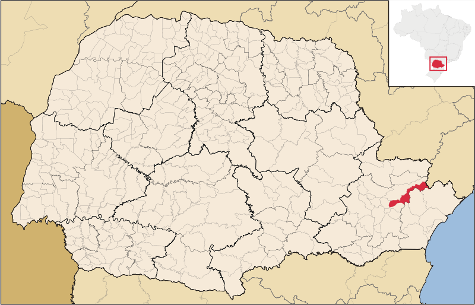
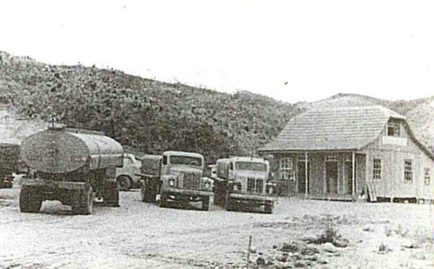
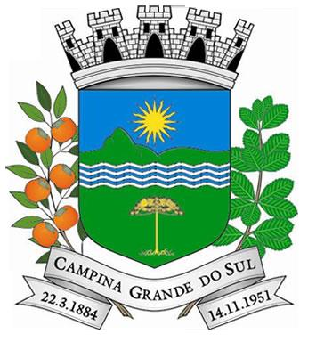
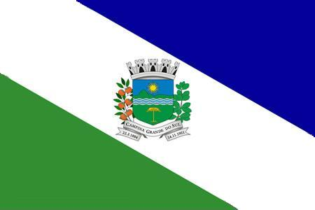

CONHEÇA CAMPINA
DADOS MUNICIPAIS
47.825 hab.
População oficial — Censo IBGE 2022.
539,244 km²
Área territorial total do município.
Mata Atlântica
Bioma predominante, com rica biodiversidade e áreas de preservação.
~32 km de Curitiba
Distância da capital. 32 km do Aeroporto Internacional Afonso Pena.
14 de novembro de 1951
Data de emancipação política do município.
Campinense do Sul
Gentílico dos habitantes do município.

NOSSA HISTÓRIA
A trajetória de Campina Grande do Sul tem início em 1666, quando surgiram os primeiros indícios de povoação na região então vinculada a Arraial Queimado, atual Bocaiúva do Sul, importante caminho de passagem de tropeiros e colonos. Em 1873, foi criada a Freguesia de Campina Grande, sob a proteção de São João Batista, fortalecendo a organização religiosa e social da comunidade. Em 1880, a vila passou a se chamar Vila Glycerio, mas, em 1881, por mobilização popular, o nome tradicional foi restabelecido como Vila da Campina Grande.
A emancipação administrativa ocorreu em 1883, com a elevação à categoria de vila e o desmembramento de Arraial Queimado, sendo a Câmara Municipal instalada oficialmente em 22 de março de 1884, com a eleição dos primeiros vereadores. Em 1892, tomou posse o primeiro prefeito, Tenente José Eurípedes Gonçalves, consolidando a organização política local.
Em 1939, o município foi extinto e seu território passou à condição de distrito, integrado a Piraquara e Bocaiúva do Sul. Em 1943, pela Lei nº 199, recebeu o nome de Timbú, permanecendo como distrito de Piraquara. A autonomia foi restabelecida em 1951, por meio da Lei nº 790, quando voltou à condição de município, ainda com o nome de Timbú. Finalmente, em 1956, por reivindicação da população e em respeito à sua história, o município passou a se chamar definitivamente Campina Grande do Sul, reafirmando sua identidade e consolidando sua trajetória de desenvolvimento.
Fotos Históricas

De Arraial Queimado a polo metropolitano — os marcos que construíram a identidade de Campina Grande do Sul.
Primeiros indícios de povoação na região chamada Arraial Queimado — caminho e refúgio de tropeiros e colonos.
Criação da Freguesia de Campina Grande, sob a proteção de São João Batista, com a construção da Igreja Matriz.
Criação do município de Campina Grande pela Lei Provincial nº 762.
Instalação oficial do município de Campina Grande em cerimônia na Câmara de Arraial Queimado.
Visita do presidente Faria ao município — cargo equivalente ao governador nos dias atuais.
Extinção do município — Campina Grande torna-se distrito de Piraquara.
O topônimo é alterado: Campina Grande passa a se chamar Timbu.
14 de novembro — Restauração dos direitos políticos e segunda emancipação do município com o nome de Timbu. Data comemorativa do aniversário da cidade.
Retorno do nome histórico: Campina Grande do Sul.
Visita do presidente Juscelino Kubitschek para inauguração da BR-116, que liga Paraná e São Paulo.
Aprovação do Hino Municipal. Letra: Francisco Pereira da Silva. Música: maestro Rodolfo Krueger.
Inauguração da Hidrelétrica Capivari-Cachoeira (Governador Pedro Viriato Parigot de Souza), às margens da BR-116.
Primeira Festa do Caqui na localidade do Mandaçaia e instalação da primeira agência bancária do município.
Aprovação da lei do perímetro urbano que deu origem à sede do município.
Inauguração do primeiro prédio do Colégio Campos Sales pelo governador Ney Braga.
Inauguração do Hospital e Maternidade Angelina Caron — referência de saúde em toda a região metropolitana.
Inauguração da Arena Coberta no Parque de Eventos.
Integração à Rede Integrada de Transporte (RIT) com conexão direta a Curitiba.
GALERIA DE PREFEITOS
Conheça os prefeitos que governaram Campina Grande do Sul desde sua emancipação política em 1951. Clique em um card para conhecer a história e o período de mandato. O destaque dourado indica o gestor atual.

Dacyr Siqueira Trevisan
1953 – 1956
1965 – 1968

Ary Alves Bandeira
1956 – 1960
1969 – 1973

Mário Strapasson
1961 – 1965

João Maria de Barros
1973 – 1977

Elerian do Rocio Zanetti
1977–1982 · 1989–1992
1997–2000 · 2001–2004

Nivaldo Bernardi
1983 – 1988

Marco Antonio Caron
1993 – 1996

Nelise Cristiane Dalprá
2004 – 2008

Luiz Carlos Assunção
2008 – 2012
2013 – 2016

Bihl Zanetti
2017 – 2024

Belenice Koffke Buff Rotini
Out. – Dez. 2024
Luiz Carlos Assunção
2025 – 2028
BANDEIRA E BRASÃO
Brasão

Bandeira

Brasão
O Brasão de Campina Grande do Sul é de autoria do heraldista Raul Breno Marquardt. Seus elementos têm significados precisos:
- Coroa Mural de prata com oito torres — classifica o município como cidade.
- Primeira partição — com a Serra do Mar e a sombra do sol, significa a riqueza natural do município, orgulho e modelo nacional na preservação ambiental e no respeito ao futuro da humanidade.
- Faixa ondada — significa a riqueza das águas no município de Campina Grande do Sul.
- Segunda partição — com a Araucária, significa o trabalho da população campinense, povo lutador que constrói o seu futuro, bem como o pinheiro, símbolo maior do Paraná.
- Ramos do caqui e da erva-mate — atestam a fertilidade das terras generosas do Município e apontam a agricultura como um dos fatores básicos da economia municipal.
- Listel — o topônimo "Campina Grande do Sul" identifica o município, e as datas 22.3.1884 e 14.11.1951 lembram respectivamente o ano de fundação do povoado e o de sua emancipação política.
HINO MUNICIPAL
Onde a vida é romance taful,
Onde as brisas são brisas de amor,
Oh! Campina bonita do Sul!
Onde achar melhor que tu?
Salve, ó solo hospitaleiro
Do meu querido Timbú!
Não te esquecem paterno torrão;
Outras terras têm elos dourados,
Mas encanto maior, isso não!
Sempre humilde, bem sei, tu serás;
Mas despida de estultas vaidades,
Tua riqueza maior, é essa paz...
Um cenário tão acolhedor,
Onde o mundo carinhos encerra
E abre os braços a todo viajor!
Que tu sejas, formoso rincão,
Bem feliz, doce Campina Grande,
Do tamanho do meu coração!
FERIADOS MUNICIPAIS
Padroeiro São João Batista
Feriado municipal em honra ao padroeiro da cidade.
Emancipação Política
Aniversário de emancipação do município, em 14 de novembro de 1951.
PONTOS TURÍSTICOS

Pico Paraná
Um dos cartões-postais do município, o Pico Paraná é a montanha mais alta do Paraná e da região Sul do Brasil. Com 1.877 metros de altitude, a vista de seu topo alcança as baías de Paranaguá e Antonina, além da cidade de Curitiba e da Mata Atlântica, localizada ao redor do litoral paranaense.
Parque Ari Coutinho Bandeira
Aliando a beleza paisagística de seu entorno às margens ocupadas por casas de veraneio, o Parque Ari Coutinho Bandeira abriga a única represa da região. O local, muito frequentado por turistas para a prática de pesca e passeios náuticos, situa-se às margens da represa Capivari Cachoeira e é aberto para visitação.
Parque de Eventos
O Parque de Eventos de Campina Grande do Sul é conhecido como a maior arena coberta da América Latina. Um dos espaços mais tradicionais da cidade para a realização de festas, o local conta com três pavimentos, 11 mil m² de área construída, palco de 860 m² e capacidade para 15 mil pessoas sentadas ou até 30 mil em pé.
Praça Bento Munhoz da Rocha Neto
Localizada na Sede de Campina Grande do Sul, a praça recebe o nome do governador do Paraná, de 1951 a 1955, Bento Munhoz da Rocha Neto, que sancionou a lei de emancipação do município. Estão localizados ao seu redor a Prefeitura Municipal, a Câmara de Vereadores, a Escola José Eurípedes Gonçalves e a Igreja Matriz São João Batista.
Cachoeiras e Rios
Comprometida com a preservação ambiental, Campina Grande do Sul possui dezenas de rios e cachoeiras que abastecem as três bacias hidrográficas: a do Rio Iguaçu, a do Ribeira e a do Atlântico ou Litoral. Os rios Timbu, Canguiri e Capivari são os principais cursos de água do município.